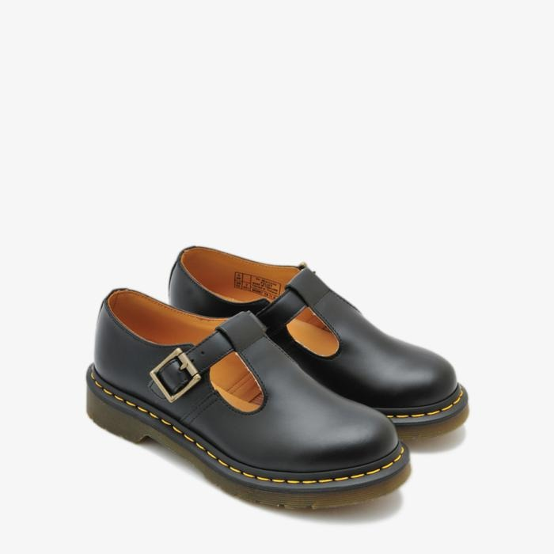
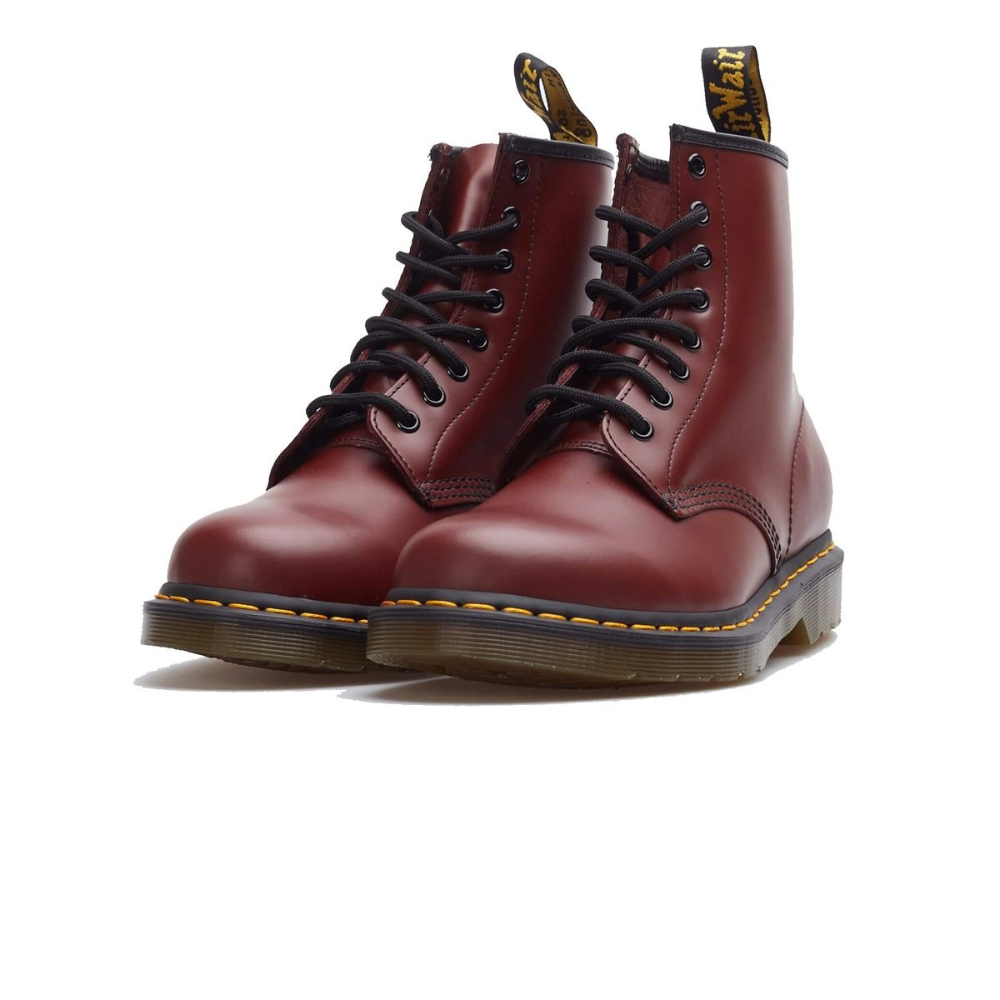
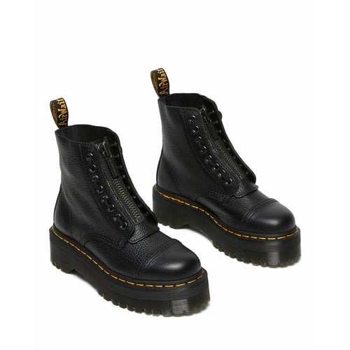
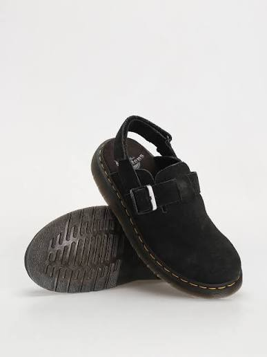
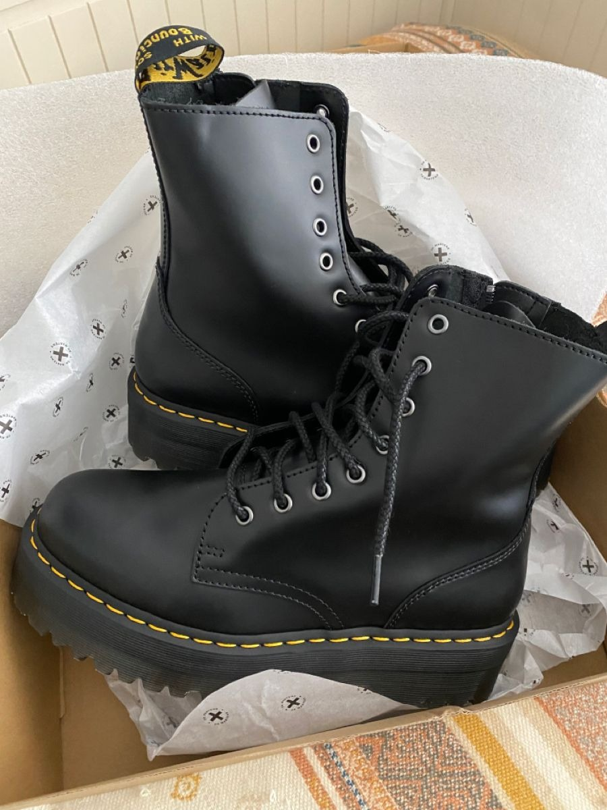
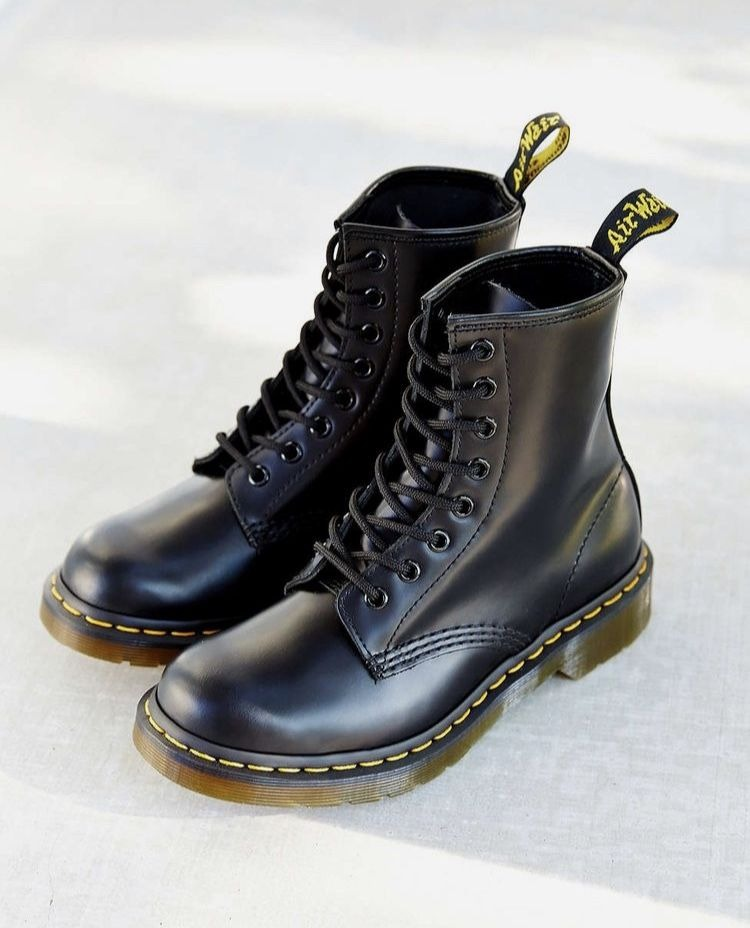
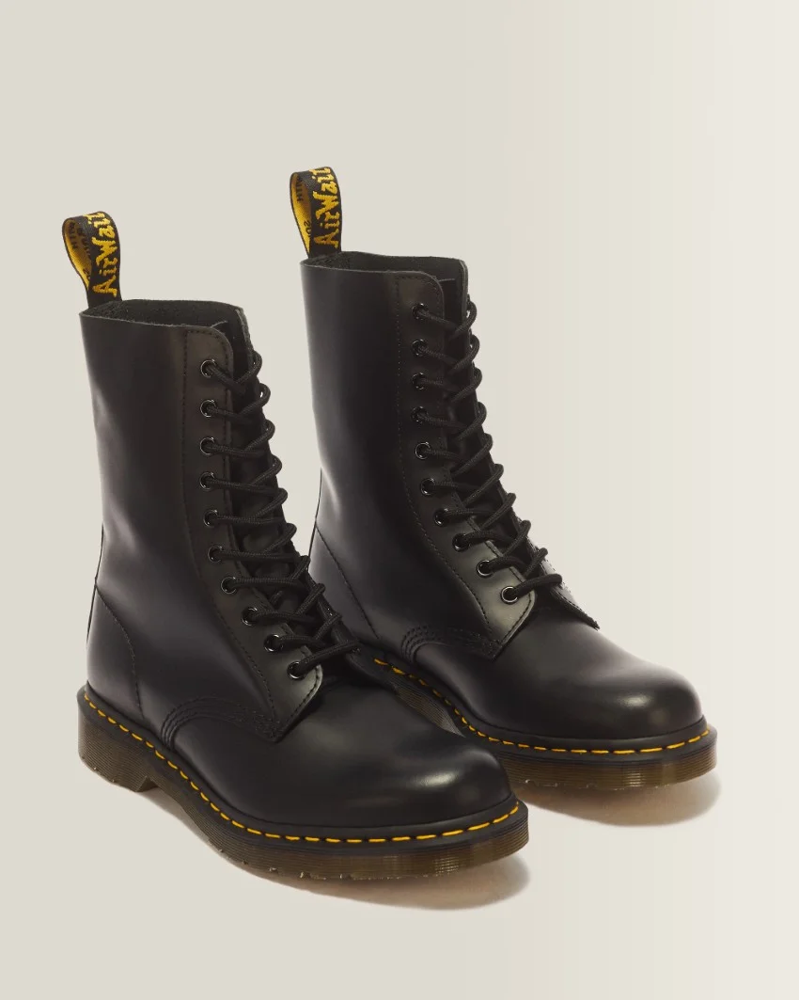
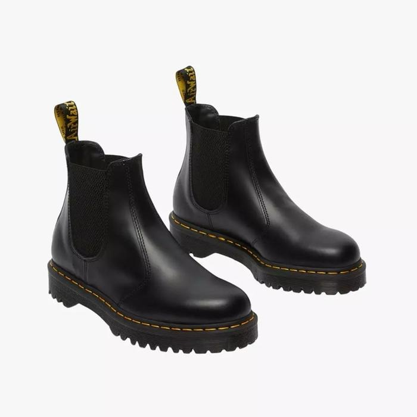
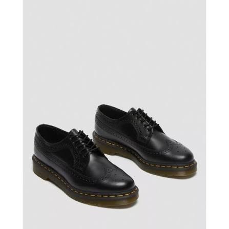

Signature

MerryJanes - Black Smooth
•Model klasik dengan dua strap gesper (double strap) bermotif lubang brogue ikonik dari Dr. Martens Indonesia.
Ikon yang terus melangkah
Temukan boots dan sepatu Dr. Martens dengan siluet legendaris, detail khas, dan karakter yang selalu terasa personal.

Katalog produk

•Model klasik dengan dua strap gesper (double strap) bermotif lubang brogue ikonik dari Dr. Martens Indonesia.

•Menggunakan kulit Milled Nappa yang telah diproses agar menghasilkan tekstur kulit jeruk (pebbled) yang sangat empuk, lentur, dan tidak sakit saat pertama kali dipakai (no break-in period).
•Menggunakan kulit Smooth Leather yang berkarakter halus, kaku, dan kokoh dengan hasil akhir semi-mengkilap (semi-glossy), menampilkan warna merah marun tua (Cherry Red) berkesan vintage, serta dilengkapi jahitan benang kuning ikonik dan sol karet tebal berbantalan udara (AirWair).

•Menggunakan desain sandal selop terbuka di bagian belakang (slingback mules/clogs) bergaya santai, dilengkapi dua strap gesper gunmetal yang bisa disesuaikan, serta dirancang menggunakan bahan kulit lembut (Ambassador atau Buttersoft nubuck) yang langsung nyaman di kaki tanpa perlu proses break-in.

•Menggunakan siluet bot klasik 8 lubang tali (8-eyelet) tanpa ritsleting samping yang dipadukan dengan sol tebal bermodel Quad platform setinggi 2 inci untuk memberikan tampilan yang tinggi dan tangguh, serta menggunakan bahan kulit Smooth Leather hitam yang kaku, kuat, dan memiliki hasil akhir semi-mengkilap (semi-glossy).

•Sepatu boots ankle legendaris dengan 8 lubang tali yang terbuat dari bahan Smooth Leather hitam kokoh bertekstur mulus dan semi-mengkilap. Seri paling awal dan paling ikonis dari Docmart ini mempertahankan ciri khas jahitan benang kuning kontras, sol bantalan udara AirWair™, serta pita penarik tumit kuning-hitam.

•Sepatu boots setinggi pertengahan betis dengan 10 lubang tali yang terbuat dari bahan Smooth Leather hitam kokoh bertekstur mulus dan semi-mengkilap. Memiliki gaya militer yang tangguh dengan DNA ikonis Docmart berupa jahitan benang kuning kontras, sol bantalan udara AirWair™ anti-selip, serta pita penarik tumit kuning-hitam.

•Sepatu slip-on model Chelsea tanpa tali dengan sol Bex tebal dan tangguh setinggi 1,3 inci. Terbuat dari kulit Smooth hitam yang kokoh, dilengkapi panel elastis samping agar mudah dipakai, serta mempertahankan ciri khas jahitan kuning kontras dan pita tumit AirWair.

•Sepatu model low-top oxford formal bergaya klasik dengan detail ukiran lubang-lubang dekoratif khas wingtip brogue. Terbuat dari bahan kulit Smooth hitam yang kuat, menggunakan sol bantalan udara AirWair™, serta mempertahankan ciri khas DNA Docmart melalui jahitan benang kuning kontras di sekeliling solnya.
Lebih dari sekadar sepatu
Dari boots klasik sampai siluet yang lebih ekspresif, setiap pasangan membawa karakter khas Dr. Martens—garis tegas, detail yang mudah dikenali, dan ruang untuk gaya personalmu.
Temukan pasanganmu